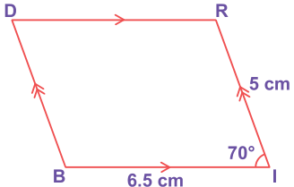
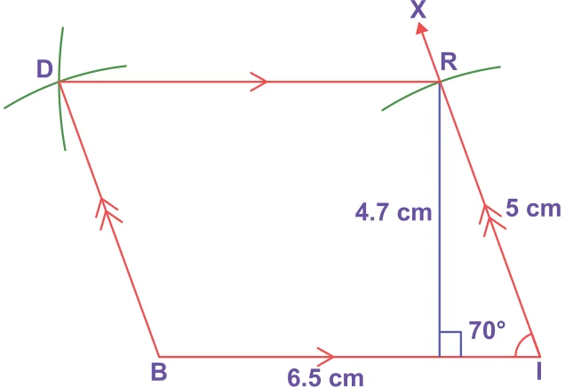
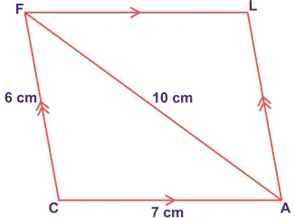
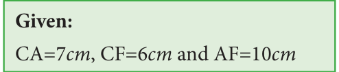
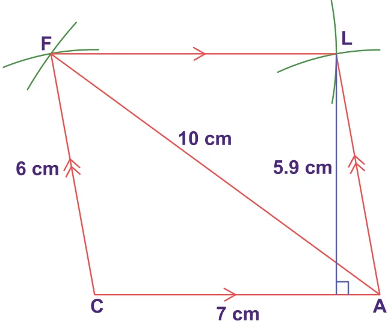
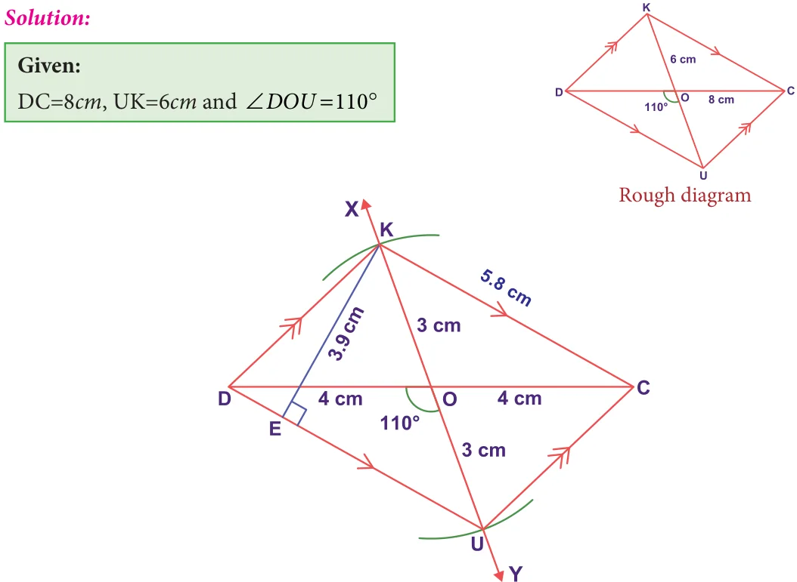
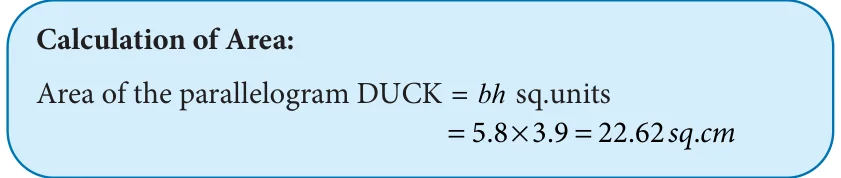
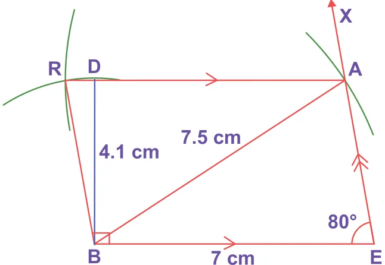

<!DOCTYPE html>
<html lang="en">
<head>
<meta charset="UTF-8">
<meta name="viewport" content="width=device-width,initial-scale=1">
<title>5.13 Construction of a Parallelogram — Geometry</title>
<meta name="description" content="Class 8 Mathematics · Geometry · 5.13 Construction of a Parallelogram">
<link rel="icon" href="data:image/svg+xml,<svg xmlns='http://www.w3.org/2000/svg' viewBox='0 0 100 100'><text y='.9em' font-size='90'>📘</text></svg>">
<link rel="stylesheet" href="../../../assets/book.css">
<link rel="stylesheet" href="https://cdn.jsdelivr.net/npm/katex@0.16.11/dist/katex.min.css" crossorigin="anonymous">
</head>
<body>
<header class="topbar">
<div class="topbar-in">
  <div class="crumb">
    <span class="c1"><a href="../../../index.html">Library</a> · <a href="../../index.html">Class 8 Mathematics</a></span>
    <span class="c2">Geometry · 5.13 Construction of a Parallelogram</span>
  </div>
  <a class="tb-btn" data-nav="prev" href="../../05-geometry/16-construction-of-special-quadrilaterals-5.12/index.html" title="5.12 Construction of Special Quadrilaterals">←</a>
  <details class="drawer"><summary class="tb-btn" title="Sections in this chapter">☰</summary>
<div class="drawer-panel"><div class="dh">Geometry</div><a href="../01-chapter-opener/index.html">Chapter opener; 5.1 Introduction</a><a href="../02-congruent-and-similar-shapes-5.2/index.html">5.2 Congruent and Similar Shapes</a><a href="../03-exercise-5.1/index.html">Exercise 5.1</a><a href="../04-the-pythagoras-theorem-5.3/index.html">5.3 The Pythagoras Theorem</a><a href="../05-converse-of-pythagoras-theorem-5.4/index.html">5.4 Converse of Pythagoras Theorem</a><a href="../06-point-of-concurrency-5.5/index.html">5.5 Point of Concurrency</a><a href="../07-medians-of-a-triangle-5.6/index.html">5.6 Medians of a Triangle</a><a href="../08-altitude-of-a-triangle-5.7/index.html">5.7 Altitude of a Triangle</a><a href="../09-perpendicular-bisectors-of-a-triangle-5.8/index.html">5.8 Perpendicular Bisectors of a Triangle</a><a href="../10-angle-bisectors-of-a-triangle-5.9/index.html">5.9 Angle Bisectors of a Triangle</a><a href="../11-exercise-5.2/index.html">Exercise 5.2</a><a href="../12-exercise-5.3/index.html">Exercise 5.3</a><a href="../13-construction-of-quadrilaterals-5.10/index.html">5.10 Construction of Quadrilaterals</a><a href="../14-construction-of-trapeziums-5.11/index.html">5.11 Construction of Trapeziums</a><a href="../15-exercise-5.4/index.html">Exercise 5.4</a><a href="../16-construction-of-special-quadrilaterals-5.12/index.html">5.12 Construction of Special Quadrilaterals</a><a href="../17-construction-of-a-parallelogram-5.13/index.html" aria-current="page">5.13 Construction of a Parallelogram</a><a href="../18-construction-of-a-rhombus-5.14/index.html">5.14 Construction of a Rhombus</a><a href="../19-construction-of-a-rectangle-5.15/index.html">5.15 Construction of a Rectangle</a><a href="../20-construction-of-a-square-5.16/index.html">5.16 Construction of a Square</a><a href="../21-exercise-5.5/index.html">Exercise 5.5</a><a href="../22-summary/index.html">SUMMARY</a></div></details>
  <a class="tb-btn" data-nav="next" href="../../05-geometry/18-construction-of-a-rhombus-5.14/index.html" title="5.14 Construction of a Rhombus">→</a>
  <button class="tb-btn" data-theme-toggle title="Toggle light / dark" aria-label="Toggle light or dark theme">◐</button>
</div>
<div class="progress"><span style="width:73.1%"></span></div>
</header>
<main class="wrap">
<div class="sec-head">
  <p class="eyebrow"><a href="../index.html">Chapter 5 · Geometry</a></p>
  <h1>5.13 Construction of a Parallelogram</h1>
  <p class="sec-meta">Textbook pages 42–46 · 16 figures</p>
</div>
<article class="prose">
<p>Let us construct a parallelogram with the given measurements</p>
<figure class="fig table-fig wide"></figure>
<h3 id="s-5-13-1-constructing-a-parallelogram-when-its-two-adjacent-">5.13.1 Constructing a parallelogram when its two adjacent sides and one angle are given</h3>
<h4 class="callout-h" id="s-example-5-30">Example 5.30</h4>
<p>Construct a parallelogram BIRD with BI=6.5cm, IR=5cm and \(\angle =70 ^{\circ}\) . Also find its area.</p>
<h4 class="callout-h" id="s-solution">Solution:</h4>
<figure class="fig side-fig"></figure>
<figure class="fig"></figure>
<aside class="sidenote"><p>Rough diagram</p></aside>
<figure class="fig"><figcaption>Fig. 5.49</figcaption></figure>
<p>Steps:</p>
<ul class="qlist">
<li><span class="mk">1.</span><span class="lt">Draw a line segment BI=6.5cm.</span></li>
<li><span class="mk">2.</span><span class="lt">Make an angle \(\angle BIX = 70 ^{\circ}\) at I on BI .</span></li>
<li><span class="mk">3.</span><span class="lt">With I as centre, draw an arc of radius 5cm cutting IX at R.</span></li>
<li><span class="mk">4.</span><span class="lt">With B and R as centres, draw arcs of radii 5cm and 6.5cm respectively. Let them cut at D.</span></li>
<li><span class="mk">5.</span><span class="lt">Join BD and RD.</span></li>
<li><span class="mk">6.</span><span class="lt">BIRD is the required parallelogram.</span></li>
</ul>
<figure class="fig"></figure>
<h3 id="s-5-13-2-constructing-a-parallelogram-when-its-two-adjacent-">5.13.2 Constructing a parallelogram when its two adjacent sides and one diagonal are given</h3>
<h4 class="callout-h" id="s-example-5-31">Example 5.31</h4>
<p>Construct a parallelogram CALF with CA=7cm, CF=6cm and AF=10cm. Also find its area.</p>
<figure class="fig side-fig"></figure>
<h4 class="callout-h" id="s-solution">Solution:</h4>
<figure class="fig"></figure>
<aside class="sidenote"><p>Rough diagram</p></aside>
<figure class="fig"></figure>
<p>Steps: Fig. 5.50</p>
<ul class="qlist">
<li><span class="mk">1.</span><span class="lt">Draw a line segment CA=7cm.</span></li>
<li><span class="mk">2.</span><span class="lt">With C and A as centres, draw arcs of radii 6cm and 10cm respectively. Let them cut at F.</span></li>
<li><span class="mk">3.</span><span class="lt">Join CF and AF.</span></li>
<li><span class="mk">4.</span><span class="lt">With A and F as centres, draw arcs of radii 6cm and 7cm respectively. Let them cut at L.</span></li>
<li><span class="mk">5.</span><span class="lt">Join AL and FL.</span></li>
<li><span class="mk">6.</span><span class="lt">CALF is the required parallelogram.</span></li>
</ul>
<figure class="fig"></figure>
<h3 id="s-5-13-3-constructing-a-parallelogram-when-its-two-diagonals">5.13.3 Constructing a parallelogram when its two diagonals and one included angle are given</h3>
<h4 class="callout-h" id="s-example-5-32">Example 5.32</h4>
<p>Construct a parallelogram DUCK with DC=8cm, UK=6cm and \(\angle = ^{\circ}\) . Also find its area.</p>
<figure class="fig wide"><figcaption>Fig. 5.51</figcaption></figure>
<p>Steps:</p>
<ul class="qlist">
<li><span class="mk">1.</span><span class="lt">Draw a line segment DC=8cm.</span></li>
<li><span class="mk">2.</span><span class="lt">Mark O the midpoint of DC .</span></li>
</ul>
<p>suur</p>
<ul class="qlist">
<li><span class="mk">3.</span><span class="lt">Draw a line XY through O which makes \(\angle DOY =110 ^{\circ}\) .</span></li>
</ul>
<aside class="sidenote"><p>suur</p></aside>
<ul class="qlist">
<li><span class="mk">4.</span><span class="lt">With O as centre and 3uuur ucmuur as radius draw two arcs on XY on either sides of DC . Let the</span></li>
<li><span class="mk">5.</span><span class="lt">Join DU ,UC,CK and \(\frac{OY}{KD\) .}</span></li>
</ul>
<p>arcs cut OX at K and at U</p>
<ul class="qlist">
<li><span class="mk">6.</span><span class="lt">DUCK is the required parallelogram.</span></li>
</ul>
<figure class="fig"></figure>
<h3 id="s-5-13-4-constructing-a-parallelogram-when-its-one-side-one-">5.13.4 Constructing a parallelogram when its one side, one diagonal and one angle are given</h3>
<h4 class="callout-h" id="s-example-5-33">Example 5.33</h4>
<p>Construct a parallelogram BEAR with BE=7cm, BA=7.5cm and \(\angle BEA=80 ^{\circ}\) . Also find its area.</p>
<h4 class="callout-h" id="s-solution">Solution:</h4>
<figure class="fig side-fig"></figure>
<figure class="fig"></figure>
<aside class="sidenote"><p>Rough diagram</p></aside>
<figure class="fig"><figcaption>Fig. 5.52</figcaption></figure>
<p>Steps:</p>
<ul class="qlist">
<li><span class="mk">1.</span><span class="lt">Draw a line segment BE=7cm.</span></li>
<li><span class="mk">2.</span><span class="lt">Make an angle \(\angle BEX =80 ^{\circ}\) at E on BE .</span></li>
<li><span class="mk">3.</span><span class="lt">With B as centre, draw an arc of radius 7.5cm cutting EX at A and Join BA.</span></li>
<li><span class="mk">4.</span><span class="lt">With B as centre, draw an arc of radius equal to the length of AE .</span></li>
<li><span class="mk">5.</span><span class="lt">With A as centre, draw an arc of radius 7cm. Let both arcs cut at R.</span></li>
<li><span class="mk">6.</span><span class="lt">Join BR and AR.</span></li>
<li><span class="mk">7.</span><span class="lt">BEAR is the required parallelogram.</span></li>
</ul>
<figure class="fig"></figure>
</article>
<nav class="pager"><a class="" data-nav="prev" href="../../05-geometry/16-construction-of-special-quadrilaterals-5.12/index.html"><span class="dir">← Previous</span><span class="t">5.12 Construction of Special Quadrilaterals</span><span class="ch">Geometry</span></a><a class="nx" data-nav="next" href="../../05-geometry/18-construction-of-a-rhombus-5.14/index.html"><span class="dir">Next →</span><span class="t">5.14 Construction of a Rhombus</span><span class="ch">Geometry</span></a></nav>
</main><footer class="site">Generated from the source textbook PDFs · text, figures and exercises belong to their respective publishers.</footer><script defer src="https://cdn.jsdelivr.net/npm/katex@0.16.11/dist/katex.min.js" crossorigin="anonymous"></script>
<script defer src="https://cdn.jsdelivr.net/npm/katex@0.16.11/dist/contrib/auto-render.min.js" crossorigin="anonymous"
  onload="renderMathInElement(document.body,{delimiters:[
    {left:'\\(',right:'\\)',display:false},
    {left:'$$',right:'$$',display:true},
    {left:'\\[',right:'\\]',display:true}],throwOnError:false,ignoredTags:['script','noscript','style','textarea','pre','code']})"></script>
<script src="../../../assets/book.js"></script>
<script defer src="../../../../assets/search.js?v=1789782769"></script>
<script defer src="../../../../assets/screenshot.js?v=1789782769"></script>
</body>
</html>
